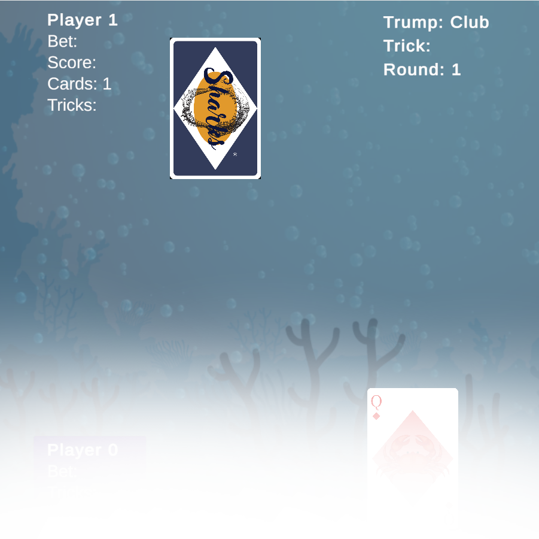

Scares Scrambler (2017-2020)
 The Scares Scrambler is an open-source Python application which takes the data/code of any
file and "scrambles" it using various user-controlled algorithms. The program is intended for
creating experimental artwork of preexisting images, audio, game files, etc.
The Scares Scrambler is an open-source Python application which takes the data/code of any
file and "scrambles" it using various user-controlled algorithms. The program is intended for
creating experimental artwork of preexisting images, audio, game files, etc.
The Scares Scrambler was built as a replacement to the aging Vinesauce ROM Corrupter, another program with similar features. The app has since become the de facto cross-platform corrupting application by virtue of Python's portability (compared to bigger apps like the Real Time Corrupter, which are exclusive to Windows).
Pantheon Wiki (2022)
 Pantheon Wiki is a Vue app for displaying fictional character data retrieved from a MongoDB
database using a NodeJS web server. The project was made for a Web-Centric Programming class,
where the the relevant tools and languages were learned in a few weeks. All the art and
writings on the site can easily be swapped for different data by changing the JSON data
hosted on the database.
Pantheon Wiki is a Vue app for displaying fictional character data retrieved from a MongoDB
database using a NodeJS web server. The project was made for a Web-Centric Programming class,
where the the relevant tools and languages were learned in a few weeks. All the art and
writings on the site can easily be swapped for different data by changing the JSON data
hosted on the database.
The wiki supports full CRUD (create, retrieve, update, delete) functionality, with a simple page editor/creator built into the site. The NodeJS server also supports RESTful API calls, with a Postman collection included with the source code for easy testing with one's own data.
Centralised University Booking System (CUBS) (2024)
CUBS is a simple MySQL/PHP/JS database application for booking public spaces on a university
campus. It allows users to view and book available spaces by interacting with a
dynamically-created week-by-week timetable. It has a simple account system for managing the
permissions of various people who may use such a system (e.g. students, staff, admins).
This project was created as part of a Database Management Systems class, and as such, the development of CUBS followed the standard DBMS development cycle. Requirements analysis was conducted to determine the project's required functionality, DB schema were created and refined, and multiple presentations were held with potential users of the system during development to guide and inform progress.
This project was created as part of a Database Management Systems class, and as such, the development of CUBS followed the standard DBMS development cycle. Requirements analysis was conducted to determine the project's required functionality, DB schema were created and refined, and multiple presentations were held with potential users of the system during development to guide and inform progress.
LINCELLAUT and ORBITVIS (2022-2024)
 LINCELLAUT and ORBITVIS are two open-source programs created to explore the dynamics of
finite linear cellular automata (think Conway's Game of Life but with stricter rules).
LINCELLAUT and ORBITVIS are two open-source programs created to explore the dynamics of
finite linear cellular automata (think Conway's Game of Life but with stricter rules).
LINCELLAUT is a collection of CLI tools written in C to automate various computations and searches. It includes an arbitrary integer precision unit, functions for dealing with matrices, vectors, and polynomials, and documentation.
ORBITVIS is a Pygame app used to visualise various orbits and data generated by LINCELLAUT. It features multiple different visualisation methods and makes use of LINCELLAUT's C codebase for fast renders.
Raycode (2024)
Raycode is a simple MATLAB application that implements ray marching to render basic shapes.
The code was written in such a way as to be easily understandable by anyone looking to
learn about how ray marching works. This project was created for a Numerical Methods
class. On the Writings page,
check out the accompanying write-up,
A Friendly Introduction to Ray Marching!
On top of the basic ray marching algorithm, other mathematical algorithms were implemented including point diffuse lighting, modular arithmetic (for infinitely-repeating shapes), and signed distance function distortions.
On top of the basic ray marching algorithm, other mathematical algorithms were implemented including point diffuse lighting, modular arithmetic (for infinitely-repeating shapes), and signed distance function distortions.
Sharks (2025)

Sharks is a Unity 6 implementation of the card game Wizard . The game was
created as part of a Game Development course and was a group effort. Valuable experience
was gained developing with a team, using GitHub Desktop to manage a shared repo, and
planning/structuring how a game will be implemented before doing any coding. It was
also an exercise in distributing responsibilities—programming, art, and planning/presentation
were split among the group's four members.
The majority of the group had no experience using Unity before this project. Over four months, the Sharks group not only learned Unity (and C#) independently, but also put together a fully functional game using the engine.
The majority of the group had no experience using Unity before this project. Over four months, the Sharks group not only learned Unity (and C#) independently, but also put together a fully functional game using the engine.
INTERNETCONNECTIVITYPORTAL (2022-2025)
 This is the website you're currently on! This website was made with vanilla HTML, CSS, and JS,
using GitHub Pages as a web host. No templates or other services were used; everything on this
site was designed and programmed from scratch!
This is the website you're currently on! This website was made with vanilla HTML, CSS, and JS,
using GitHub Pages as a web host. No templates or other services were used; everything on this
site was designed and programmed from scratch!
This site was created with responsive design in mind. Larger screens display a traditional horizontal navigation bar at the top of each page, while smaller screens utilise a mobile-friendly sidebar.
A list of smaller (mini) projects I've made over the years will eventually be placed here (including the SoME3 square visualisation tool I made...)